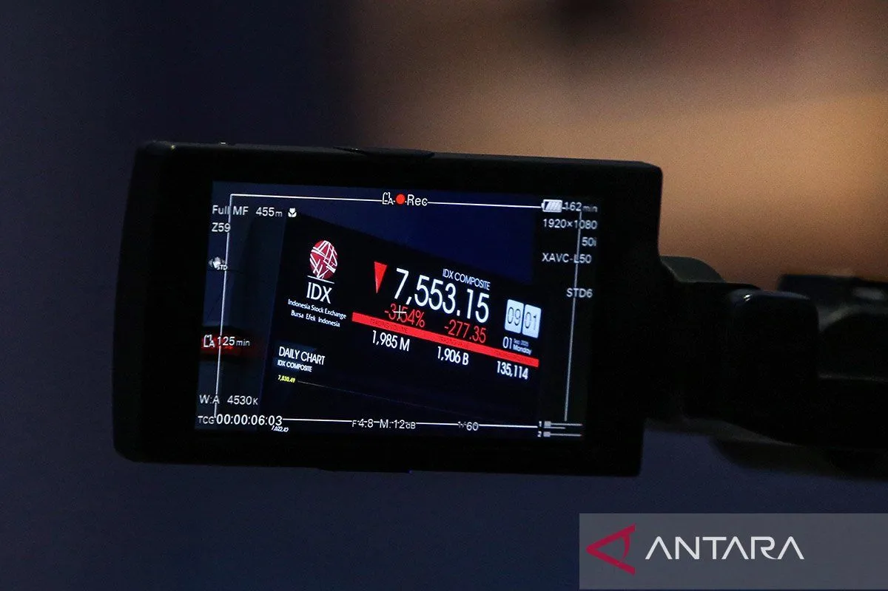
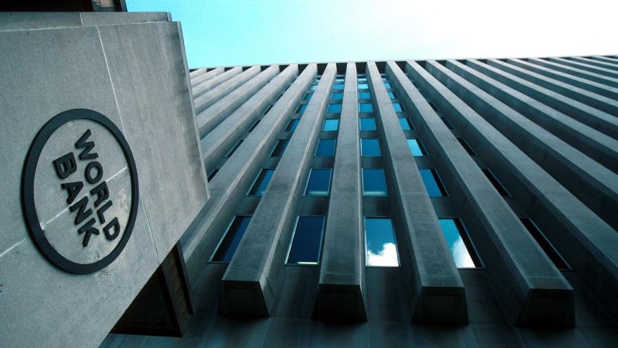

|
BERITA TERKINI
|
|
1 Tahun Pemerintahan Prabowo, Airlangga: Pertumbuhan Ekonomi Jadi Salah Satu yang Tertinggi di G20.

IHSG naik seiring kenaikan proyeksi pertumbuhan ekonomi RI.
Rupiah Loyo terhadap Dolar AS Hari Ini 8 Oktober 2025 Tersengat Komentar Pejabat The Fed.

Bank Dunia Naikkan Proyeksi Ekonomi RI 2025 jadi 4,8%.